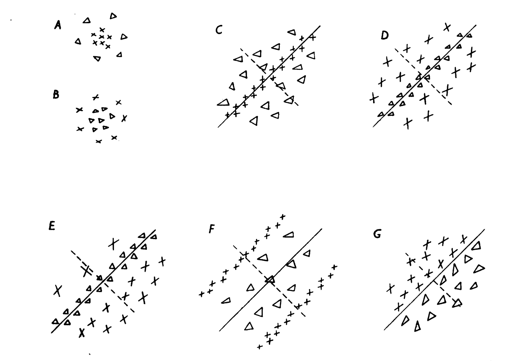
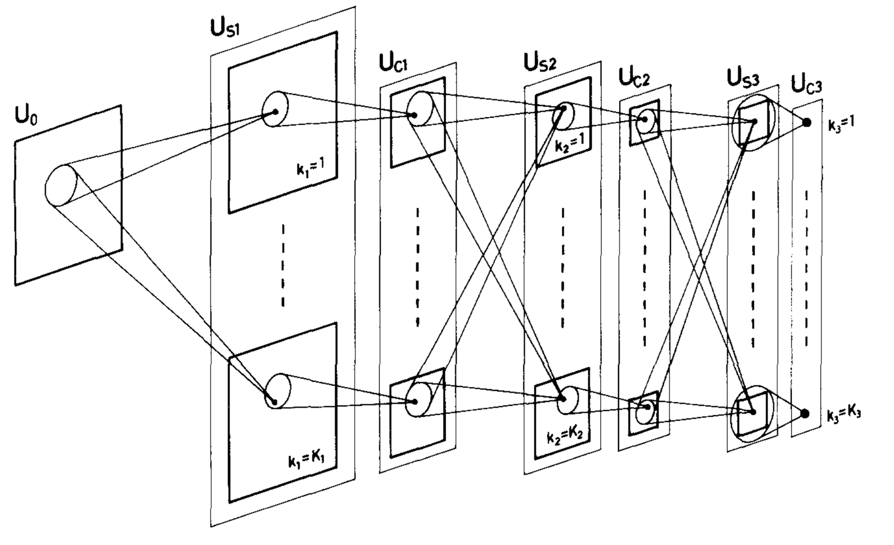
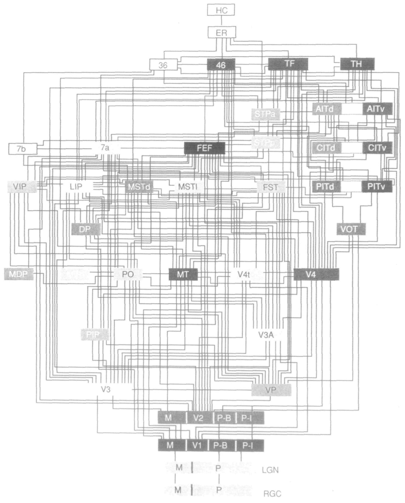
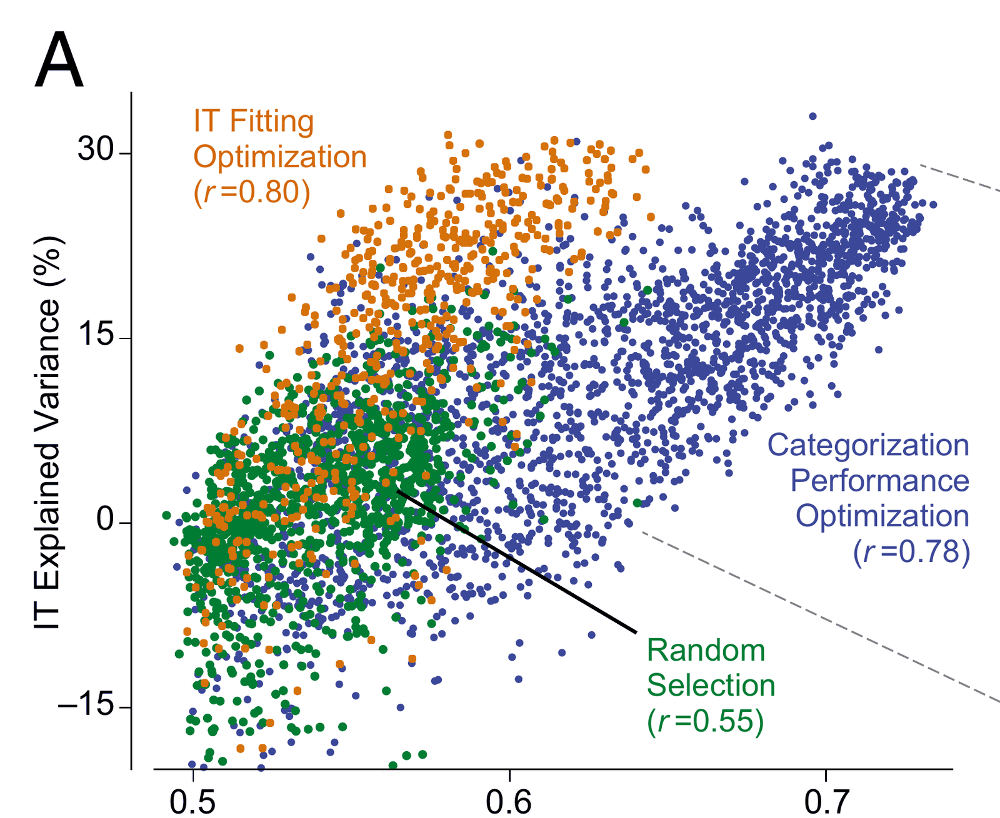
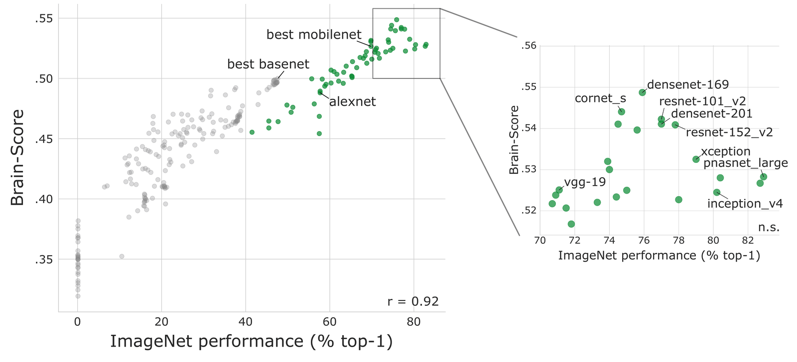
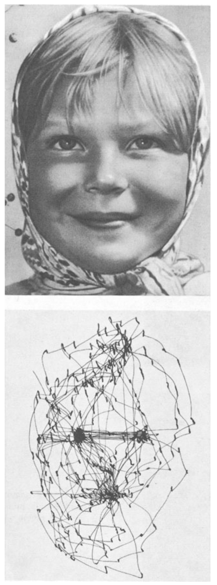
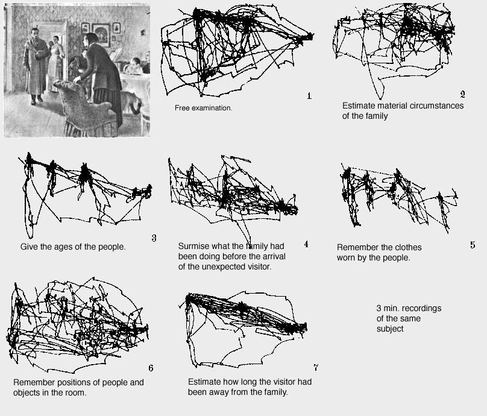
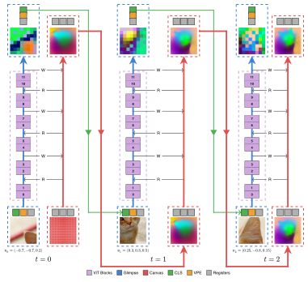

Toward Active-Vision Foundation Models
Yohaï-Eliel Berreby
Sabrina Du
Audrey Durand
B. Suresh Krishna
 NeurIPS 2026
NeurIPS 2026
Computational models of biological visual processing

Receptive fieldsHubel & Wiesel 1962, J. Physiol.

NeocognitronFukushima 1980, Biol. Cybern.

The primate visual hierarchyFelleman & Van Essen 1991, Cereb. Cortex

Better at recognizing objects, better at predicting ITYamins et al. 2014, PNAS

Brain-ScoreSchrimpf et al. 2018, bioRxiv
Human vision is fundamentally active


Yarbus 1967, Eye Movements and Vision
Integrating multiple viewpoints into a coherent understanding
DINOv3 feature maps

 television
television fireplace
fireplace armchair
armchair
DINOv3 ViT-B/16, Siméoni et al. 2025
A brief history of deep active computer vision
where to look, learned by reinforcement learning
The wide gap between passive and active computer vision
Classification
 English springer
English springer
What's in an active-vision model?
Seeing
Instantaneous vision
making sense of what it sees at a given moment
Memory
updating a persistent, evolving understanding of the scene
Observer
Choosing where to look
Action selection
deciding where and at what zoom level to look next
Policy
prior work focused here
No policy can make up for a poor observer. A general-purpose observer lets you use any policy.
CanViT in action
Canvas Vision Transformer architecture
Passive-to-active dense latent distillation
Glimpse
(x, y, scale)
Prediction
MSE
Target
…
Glimpse 1


Glimpse 2


Glimpse 3


Glimpse 21


Policy agnosticism
A persistent, evolving understanding of the scene
Glimpses
Memory kept
Memory reset
Spatial coverage and perception of detail
Scene
CanViT's input, 128 px
Viewing policies
Uncertainty-based viewpoint selection
Benchmark results on ADE20K and ImageNet-1k
Accuracy by viewing policy
ImageNet-1k classification
ADE20K segmentation
Training cost
Best accuracy v. each model's own training compute
ImageNet-1k classification
ADE20K segmentation
Teachers and pretrained weights are not counted, on any side.
Active ADE20K segmentation
Accuracy v. efficiency
Toward action-aware neuro-AI research on vision
Top-down feedback
How does what was seen change how the next view is processed?
Trans-saccadic memory
 kept
kept
 reset
reset
What is kept from one view to the next?
Scanpaths
Yarbus 1967
How do human scanpaths compare with policies on the same observer?
Quickstart
uv add canvit-pytorch
street.jpg
logits.argmax(1)
Canvas Attention
CanViT architecture diagram

CanViT-B and its DINOv3 teacher
ADE20K accuracy v. inference compute
Live demo


 Paper
Paper Code
Code Models
Models